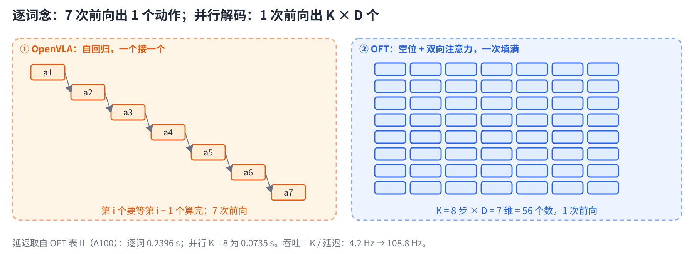
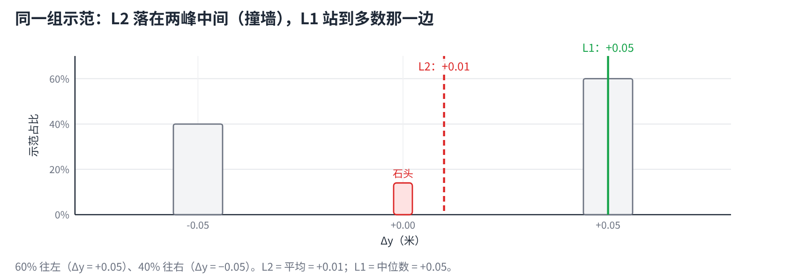
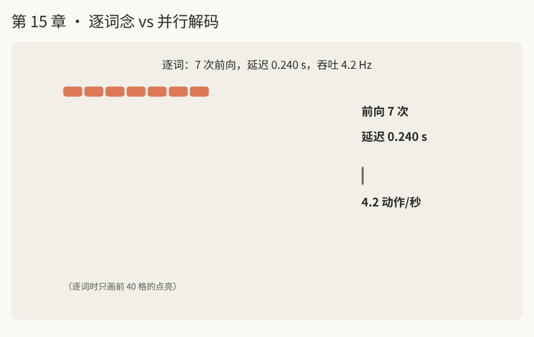

第 15 章 · OpenVLA-OFT：一次吐完所有动作，直接回归连续值
本地运行
git clone https://github.com/wikieden/vla-from-scratch
cd vla-from-scratch/code/notebooks
pip install jupyterlab torch numpy
jupyter lab ch15_oft.ipynb也可以下载后直接用 VS Code 打开 .ipynb 运行。需要 GPU 的章节在 Colab 里选「代码执行程序 → 更改运行时类型 → GPU」。
本章回答：第 6 章说 OpenVLA 一个字一个字念，只有 4–6 Hz。OpenVLA-OFT 没换主干，只改了微调配方，就快了 26 倍、LIBERO 成功率从 76.5% 涨到 97.1%。它改了哪三处？为什么"直接回归一个数"在多峰时也不一定撞墙？
讲解日期：2026-11-24 · 上一章：第 14 章 主流 VLA 模型全景 · 下一章：第 16 章 跨本体
对应原文：materials/text/papers/openvla-oft-2502.19645.txt（下称 OFT）摘要 L13–L37；§IV-A 并行解码 L176–L196；§IV-B 连续动作 L197–L220；§IV-C FiLM L185–L250（右栏）；表 I L279–L316；表 II L319–L360
本章缩写：OFT = Optimized Fine-Tuning（优化 / 微调）；PD = Parallel Decoding（并行 / 解码）；AC = Action Chunking（动作 / 分块）；L1 = 绝对值误差；FiLM = Feature-wise Linear Modulation（逐特征 / 线性 / 调制）；SR = Success Rate（成功率）；DDIM = Denoising Diffusion Implicit Models（去噪扩散隐式模型，一种少步采样器）；MLP = Multi-Layer Perceptron（多层 / 感知机）；LoRA = Low-Rank Adaptation（低秩 / 适配）。全表见 appendix-glossary.md
讲解
第 1 步：并行解码，D 次前向变 1 次（2026-11-24）
类比：报电话号码 vs 把号码写在纸上递过去。 第 6 章的 OpenVLA 像一位一位念号码：念完一位，才能想下一位。OFT 改成在纸上留好 7 个空格，一眼看完题目，一次把 7 个空格全填上。
改了什么（OFT L178–L192）：
- 输入里放 \(K \times D\) 个空的动作嵌入（empty action embeddings），K 是 chunk 长度，D 是动作维数；
- 把因果掩码换成双向注意力，这些空位之间互相能看；
- 一次前向，空位的输出就是全部 \(K \times D\) 个动作。
原文："This reduces action generation from D sequential passes to a single pass"（L185–L186）。
吞吐量怎么算：每次前向出 K 个动作（一个 chunk），花一次延迟 \(T\)：
例（表 II，A100，一张 224 px 图 + LIBERO 指令，L319–L360）：
| 变体 | 每次出几个动作 | 延迟 T | 吞吐 = K / T |
|---|---|---|---|
| OpenVLA（逐词念 7 个 token） | 1 | 0.2396 s | 4.2 Hz |
| + 并行解码 PD | 1 | 0.0629 s | 15.9 Hz |
| + PD + 动作分块 AC（K = 8） | 8 | 0.0735 s | 108.8 Hz |
| + PD + AC + 连续 L1 | 8 | 0.0729 s | 109.7 Hz |
| + 腕部相机 + 本体状态 | 8 | 0.1120 s | 71.4 Hz |
108.8 ÷ 4.2 ≈ 26 倍，就是论文说的 26×（L324）。加了 chunk 后延迟只涨了 17%（0.0629 → 0.0735 s，L320–L322）：多出来的 49 个空位是同一次前向里并行算的，不是多跑 49 遍。

图 15-1 · 左边每个格子要等前一个算完；右边 K × D 个空位一次填完。
一句话：把"念 7 遍"改成"空格一次填满"，再一次填 8 步，吞吐就涨了 26 倍。
第 2 步：连续回归，L1 损失（2026-11-24）
类比：尺子上的刻度 vs 游标卡尺。 第 6 章把每个数四舍五入到 256 格里最近的一格；OFT 去掉格子，直接读出小数。
改了什么（L197–L220）：最后一层隐藏状态不再过词表，而是接一个小 MLP 动作头，直接输出 7 个连续数；损失用 L1：
为什么是 L1，不是 L2？ 第 4 章说求平均会撞墙。但 L1 最小化的不是平均值，而是中位数：
| 示范里 Δy 的分布 | L2 学出（平均） | L1 学出（中位数） |
|---|---|---|
| 50% 左（+0.05）、50% 右（−0.05） | 0（撞墙） | −0.05 到 +0.05 之间任何数都一样好（不稳定） |
| 60% 左、40% 右 | +0.01（偏一点，还是撞墙） | +0.05（选了多数那一边） |
所以只要一种做法略占多数，L1 会站到那一座峰上，而 L2 永远停在山谷里。OFT 的说法是 LIBERO 这类数据上 L1 已经够用（L266–L268）；真正五五开的多峰任务，仍然要第 8 章的扩散 / flow 头。
例（表 I，四个 LIBERO 套件平均成功率，L279–L316）：
| 变体 | 平均 SR |
|---|---|
| OpenVLA 微调（离散 token、逐词） | 76.5% |
| + PD&AC（离散） | 90.2% |
| + PD&AC + 连续扩散头 | 95.4% |
| + PD&AC + 连续 L1（OFT） | 95.3% |
| OFT + 腕部相机 + 本体状态 | 97.1% |
扩散头的代价：扩散要多步去噪，步数一少就崩（表 II，LIBERO-Long）：
| 测试时去噪步数 | 50 | 10 | 5 | 2 | 1 |
|---|---|---|---|---|---|
| 延迟（s） | 1.907 | 0.4145 | 0.2279 | 0.0996 | 0.0731 |
| 吞吐（Hz） | 4.2 | 19.3 | 35.1 | 80.3 | 109.4 |
| SR（%） | 91.1 | 91.0 | 90.0 | 85.7 | 0.0 |
L1 头一次前向就出结果（90.7%），和扩散头 50 步差不多准，却快 26 倍。

图 15-2 · 同一组示范，L2 落在两座峰中间，L1 站到占多数的那座峰上。
一句话：L1 取中位数，略占多数的那种做法会被选中；简单、一步出结果，LIBERO 上和扩散头一样准。
第 3 步：FiLM，让每个图块都知道指令（2026-11-24）
类比：戴着有色眼镜看。 同一张桌子，戴红色眼镜（"找红杯子"）时红色的东西更显眼。FiLM 就是按指令给视觉特征"调色"：每个通道乘一个倍数、加一个偏移。
为什么要加（L185–L247 右栏）：在 ALOHA 双臂上，腕部相机画面里线索很多，模型会只看画面、不听指令（比如桌上有两样东西，指令换了它还是去拿同一个）。FiLM 把指令信息直接注入每层视觉特征：
- \(F\)：一个图块的视觉特征（D 维）；
- \(\gamma, \beta\)：由指令的平均嵌入投影出来的两组 D 维向量；
- \(\odot\)：逐元素相乘；
- 写成 \(1 + \gamma\) 而不是 \(\gamma\)：初始化时 \(\gamma, \beta \approx 0\)，FiLM 就是恒等变换，不扰乱预训练好的视觉编码器（代码注释，
film_vit_wrapper.pyNOTE #2）。
同一组 \(\gamma, \beta\) 作用在所有图块上（L217–L222），所以调色是全图统一的，不是局部的。
例（数是编的，3 维）：\(F = [0.5, -0.2, 1.0]\)，\(\gamma = [0.2, 0, -0.5]\)，\(\beta = [0, 0.1, 0]\)：
第 1 通道被放大、第 3 通道被压低：指令说"这一类特征重要、那一类不重要"。
场景代码：OpenVLA-OFT 的真实写法（materials/code/openvla-oft/repo/prismatic/models/film_vit_wrapper.py、action_heads.py，节选）：
# FiLM：x = (1 + gamma) * x + beta，gamma / beta 来自指令嵌入的平均
gamma = self.scale(average_language_embedding) # (B, D)
beta = self.shift(average_language_embedding) # (B, D)
x = x * (1 + gamma.unsqueeze(1)) + beta.unsqueeze(1) # 每个图块都乘同一组 gamma
# L1 回归头：K × D 个动作位的隐藏状态 → MLP → 连续动作
h = actions_hidden_states.reshape(batch_size, NUM_ACTIONS_CHUNK, -1) # (B, K, D·hidden)
action = self.model(h) # (B, K, D)
loss = torch.nn.L1Loss()(action, ground_truth_actions) # 第 2 步的 L1
一句话：FiLM 用指令给视觉特征调色，\(1+\gamma\) 让它一开始什么都不改。
动画演示：逐词念 vs 并行解码

可交互版：animations/15-oft.html（下拉：解码方式；滑块：chunk 长度 K 1–16、动作维数 D 3–14）。
怎么看：
- 上排格子是要输出的 K × D 个动作数；逐词模式一格一格亮，并行模式一次全亮（第 1 步）；
- 中间是前向次数和延迟；延迟按表 II 的 0.2396 s（逐词 7 个 token）与 0.0629 → 0.0735 s（并行）插值；
- 右边是吞吐 K / T；
- 播放：逐词 K = 1 → 并行 K = 1 → 并行 K = 8 → 并行 K = 16 → 逐词 K = 8（56 个 token，慢得离谱）。
练习与作答记录
题 1（第 1 步）：把 chunk 改成 K = 16，假设并行解码一次前向 0.085 s。吞吐是多少？比 OpenVLA 原版的 4.2 Hz 快几倍？如果还是逐词念（每个 token 约 0.034 s），16 × 7 个 token 要多久？
作答记录：（待作答）
题 2（第 2 步）：示范里 70% 往左绕（Δy = +0.04）、30% 往右绕（Δy = −0.04）。L2 学出的 Δy 是多少？L1 呢？哪一个会撞上中间的石头？
作答记录：（待作答）
题 3（第 3 步）：\(F = [1.0, 0.4, -0.6]\)，\(\gamma = [-0.5, 0.5, 0]\)，\(\beta = [0.2, 0, 0.1]\)。FiLM 输出是多少？如果 \(\gamma = \beta = 0\) 呢？这说明了什么？
作答记录：（待作答）
口诀
念号码一位一位，填空格一次填满，再一次填八步；
平方取平均站山谷，绝对值取中位站多数那座峰；
戴眼镜按指令调色，一开始眼镜是透明的。
本章复习卡片
V37（并行解码：空位 + 双向注意力，吞吐 K/T；表 II 4.2 → 108.8 Hz）、V38（L1 取中位数、L2 取平均；FiLM \((1+\gamma)\odot F+\beta\)）。练习做完后，按答错、卡住的地方再补。
附录 · 延伸阅读
留给以后深入学习用，不影响本章主线。★ 是建议先读的。
推荐阅读
| 读什么 | 读哪里 | 读它为了什么 |
|---|---|---|
| ★ OpenVLA-OFT（Kim 等，2025） | openvla-oft-2502.19645.txt §IV L176–L250；表 I、II |
本章原文 |
| OpenVLA-OFT 代码 | materials/code/openvla-oft/repo/prismatic/models/action_heads.py、film_vit_wrapper.py |
L1 头和 FiLM 的真实写法 |
| FiLM 原论文（Perez 等，2018） | §7.2，本地无原文 | 为什么写成 \(1+\gamma\) |
| 第 6 章 动作当词 | 逐词念为什么慢 | 前置 |
| 第 4 章 多峰 | 平均会撞墙 | L1 / L2 对比的出发点 |
| 《从零读懂 Transformer》第 17 章 因果 mask | 因果 vs 双向 | 并行解码换掉的是这张遮挡表 |
数学原理
- L1 的最小值点是中位数：对 \(\sum_i |x - a_i|\) 求导，左右两边样本数相等时导数为 0；L2 的最小值点是平均值。
- 吞吐 vs 延迟：延迟是"想一次要多久"，吞吐是"一秒出几个动作"；chunk 让一次前向出多个动作，吞吐涨、延迟几乎不变。
- 逐元素调制：\((1+\gamma)\odot F\) 每个通道各乘各的倍数，等价于乘一个对角矩阵。
公式清单
| 公式 | 意思 |
|---|---|
| 吞吐 \(= K / T\) | 每次前向出 K 个动作，花 T 秒 |
| \(\mathcal{L}_{\text{L1}} = \frac{1}{KD}\sum\lvert\hat a - a\rvert\) | 连续动作的 L1 损失 |
| \(\arg\min_x \sum\lvert x-a_i\rvert = \text{中位数}\) | L1 站到多数那一边 |
| \(\mathrm{FiLM}(F) = (1+\gamma)\odot F + \beta\) | 指令给视觉特征调色 |
代码对照：把本章的数字用代码算一遍
纯 Python + NumPy。代码在仓库本地
vla-deep-dive/solutions/chapter-code/ch15_oft.py，配套测试tests/test_ch15.py：
bash cd vla-deep-dive/solutions/chapter-code uv run python ch15_oft.py uv run pytest tests/test_ch15.py
讲义 ↔ 代码：
| 讲义 | 写法 | 跑出来 |
|---|---|---|
| 第 1 步 | throughput(k, latency)、TABLE_II |
4.2 / 15.9 / 108.8 / 109.7 / 71.4 Hz；26 倍 |
| 第 2 步 | l2_fit(values, weights)、l1_fit(values, weights) |
60/40 时 L2 = +0.01、L1 = +0.05 |
| 第 2 步 | DIFFUSION_STEPS |
50 步 4.2 Hz、1 步 109.4 Hz |
| 第 3 步 | film(f, gamma, beta) |
[0.6, −0.1, 0.5] |
代码里才看得到的 3 件事：
l1_fit在候选点上直接比较总误差；五五开时左右两个峰误差一样大，代码返回先找到的那个，这正是"L1 在五五开时不稳定"。- 表 II 的吞吐四舍五入到 0.1 Hz：1 / 0.2396 = 4.17，表里写 4.2；8 / 1.9070 = 4.195，也写 4.2。
film的 γ、β 对所有图块共享，所以输入可以是 (图块数, D) 的矩阵，广播一次就行。
自己改一改（不影响练习答案）：
- 把
throughput的 K 改成 4、16、32，看延迟不变时吞吐怎么涨。 - 给
l1_fit喂一个三峰分布（30% / 30% / 40%），看它站到哪里。 - 让
film的 γ 取 −1，看对应通道变成了什么。